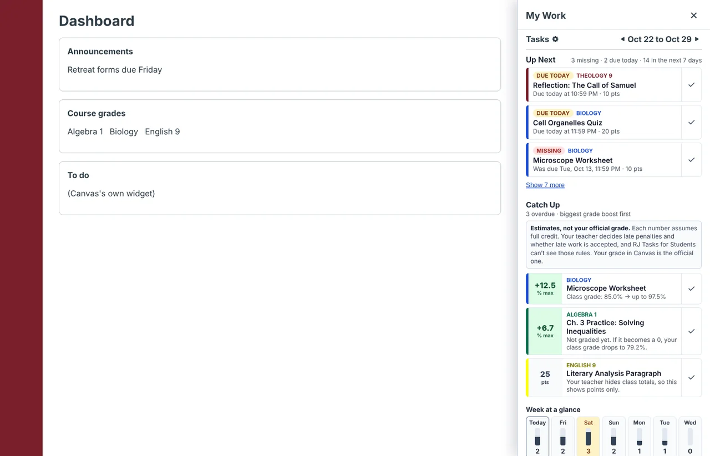
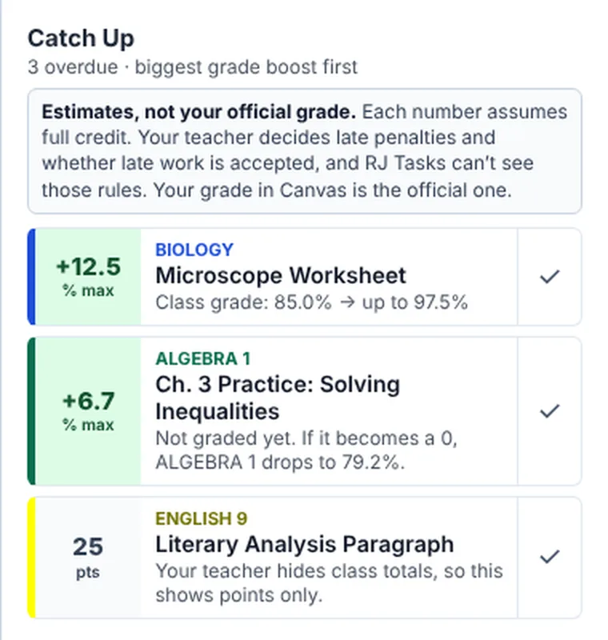
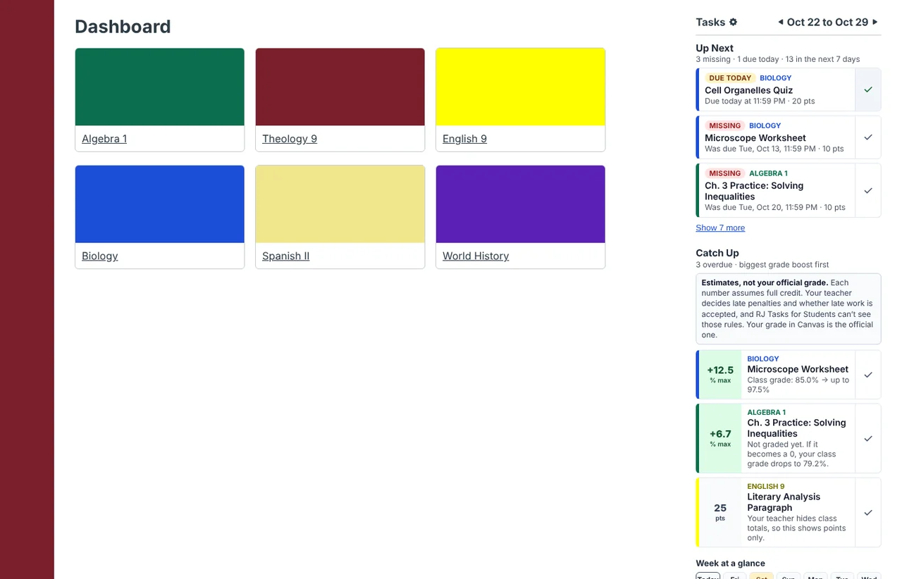
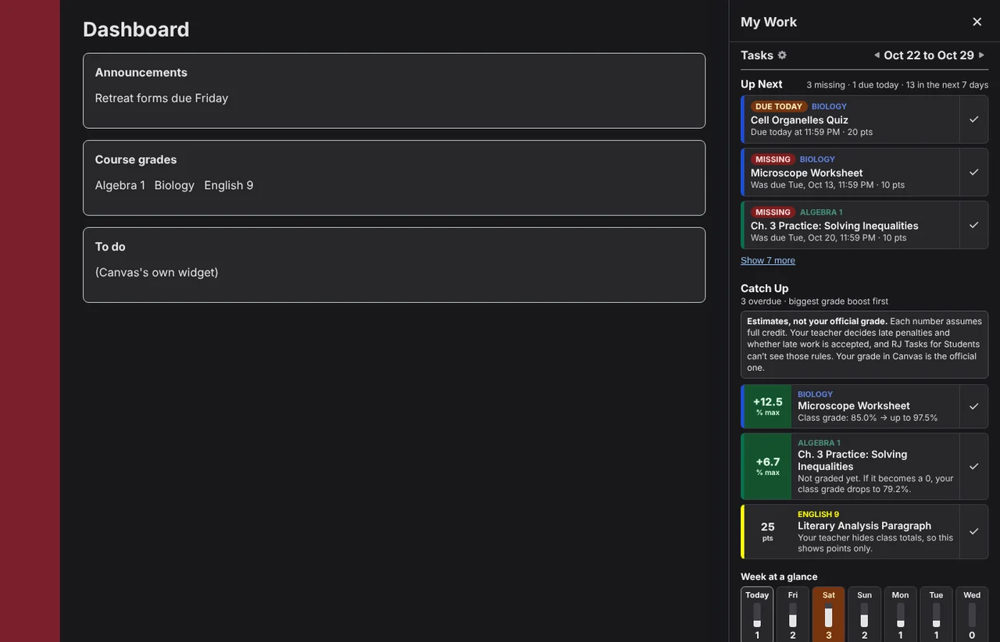
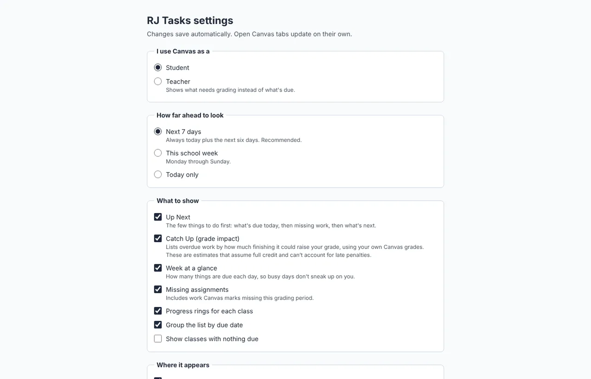
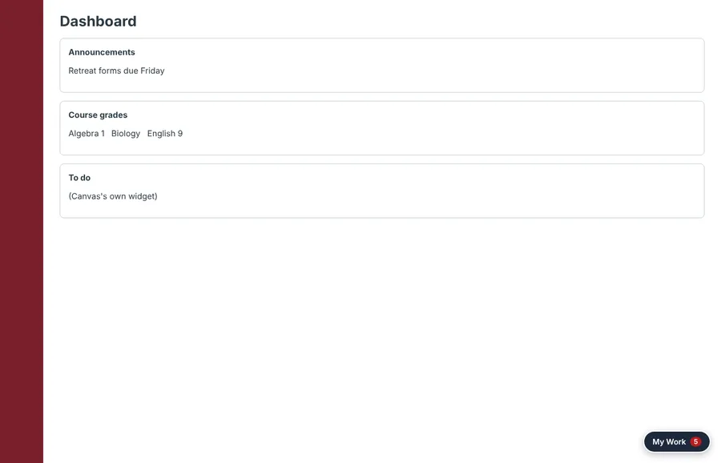

RJ Tasks
Offered by Regis Jesuit High School Ed Tech





Screenshots use sample classes and assignments.
Overview
RJ Tasks answers one question inside Canvas: what should I work on next? It pulls everything due across your classes into one place, puts missing work in front of you, and shows you which assignments matter most for your grade.
Up Next
The three things to do first: what's due today, then missing work, then tomorrow. Check one off and it's marked done in Canvas too, including the Canvas app.
Catch Up
Overdue work ordered by how much finishing each one could raise your grade, worked out from your own Canvas grades and category weights.
Estimates, not your official grade. Each number assumes full credit. Your teacher decides late penalties and whether late work is accepted, and RJ Tasks can't see those rules. Your grade in Canvas is the official one.
Week at a glance
How many things are due on each of the next seven days, so a heavy Thursday doesn't sneak up on you.
My Work, everywhere in Canvas
A My Work button in the corner of every Canvas page, with a count of what's missing or due today. The same count shows on the toolbar icon.
Progress rings
A ring for each class showing how much of this week's work is done, with a little confetti when you finish one.
Readable by design
No themes or color tricks that make Canvas hard to read. Text drawn in your course colors is adjusted automatically so it stays readable.
Install
Nothing to install
Ed Tech turns RJ Tasks on for school laptops in Microsoft Edge. Once it reaches yours, open Canvas and look for the My Work button in the bottom-right corner.
Install it yourself
Seven steps in Microsoft Edge on Windows or Mac, about three minutes. The orange numbers in each picture match the steps.
-
when it finishes, click Show in folder. -
Unzip it, and keep the folder
- Windows: right-click the file, choose Extract All…, then Extract.
- Mac: double-click the file.
Move the new rj-tasks-1.1.2 folder to Documents. Edge runs RJ Tasks from this folder, so if it gets deleted, RJ Tasks stops working.
File Explorer on Windows. -
Open Edge's extensions page
In Microsoft Edge, click the address bar, type this address and press Enter. Websites can't link straight to this page, so it has to be typed or pasted.
the Edge address bar. -
Turn on Developer mode
On the left side of the Extensions page, near the bottom, switch on Developer mode. A row of new buttons appears at the top.
If the switch is grey and won't move, your computer is managed by RJ. Skip these steps: RJ Tasks will be installed for you.
the Extensions page with Developer mode on. -
Load the RJ Tasks folder
Click Load unpacked. Find the rj-tasks-1.1.2 folder from step 2 and click Select Folder.
Pick the folder itself, not the .zip file. Inside it is a file called
manifest.json.Load unpacked and the folder picker. -
Pin it to the toolbar
RJ Tasks now appears in your list of extensions with its switch on. To keep its icon next to the address bar, click the puzzle piece, then the eye next to RJ Tasks.
the Extensions menu in the Edge toolbar. -
Open Canvas
Go to rjhs.instructure.com, or reload Canvas if it's already open. Click My Work in the bottom-right corner. On the classic dashboard and class pages, RJ Tasks sits in the right-hand column instead.

The My Work button, with a count of what's missing or due today.
Privacy
RJ Tasks shows you your own Canvas information and nothing leaves your browser.
Help
Report a bug or request a feature
Found something that isn't working, or want RJ Tasks to do something new? Use the RJ Tasks form. It takes about a minute, and you'll sign in with your RJ account. For a bug, add a screenshot if you can. Please don't include other students' names or grades.
Report a bug or request a featureI don't see My Work in Canvas
Make sure you're on rjhs.instructure.com and reload the page. In Edge, open edge://extensions and check that RJ Tasks is listed and switched on. On the classic dashboard, look in the right-hand column instead of the corner.
Edge asks me to turn off "developer mode extensions"
Edge shows this reminder for any extension installed by hand. Choose to keep it. When Ed Tech installs RJ Tasks for you, the reminder doesn't appear.
RJ Tasks stopped working after I cleaned up my Downloads
The rj-tasks-1.1.2 folder was probably deleted. Download it again, put the folder in Documents, and repeat step 5.
A Catch Up number doesn't match my grade
Catch Up shows estimates that assume full credit. Late penalties, extra rules your teacher uses, and grades that haven't been posted yet can all change the real result. Your grade in Canvas is the official one. If the numbers look very different, the item is marked "about."
The panel shows an error
Reload Canvas. If it keeps happening, report a bug and add a screenshot of the message.